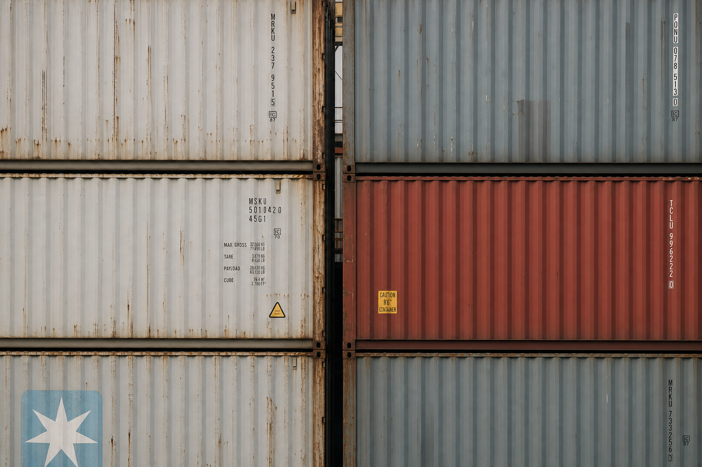

Index Scope and Lane Eligibility
Meridian observes containerized freight prices across port pairs where quote density, sailing frequency, and equipment availability meet minimum thresholds.
Each lane is evaluated daily against source diversity, timestamp freshness, and movement relevance before entering the composite index.
Data Collection Methadology
Inputs include verified forwarder quotes, carrier tariff filings, booking confirmations, port dwell metrics, schedule reliability, and bunker fuel reference prices.
Outlier observations are quarantined when they diverge from lane-specific volatility envelopes without supporting source corroboration.

Normalization and Weighting
Rate observations are converted into comparable USD per FEU values by equipment type, surcharge treatment, and validity window.
Composite values weight dense, recent, multi-source observations above isolated spot quotes that do not reflect executable market depth.
JSON Response Sample
{
"lane_code": "SHA-LAX",
"equipment": "40HC",
"rate_usd_feu": 2184,
"wow_delta": 0.031,
"source_density": 0.92,
"last_updated": "2026-05-24T08:45:00Z"
}